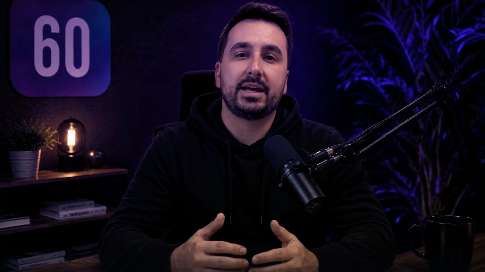

More replies.
The video says their name and their company in the first three seconds. That is the difference between a message that gets deleted and one that gets watched.
I watched cold email replies collapse, and watched generic template videos with a name dropped in fail to fix it. This is what I built instead. Andrew, founder of Sixty Seconds
Real clients, real numbers: 535+ replies for Clarion Events, £595k of production spend avoided at Knight Frank. Read the case studies
On your videos it is your face and your voice. Andrew is our founder: he filmed once, and the AI rebuilds his face and voice for every video after that. The person and the company in this example are invented.
Priya at Northbank just watched 87% of her video
The first three seconds.
A template asks them to care before it has earned anything. This says who it is for, before they have decided whether to keep watching.
Invented example
Their company, on screen before a word is spoken.
Her name, at the size a headline gets.

A person talking, who already knows both.
Three seconds is the whole decision. Everything after it is the pitch you would have sent anyway.
One list in. Seven hundred videos out.
Pick what you would actually hand us. The output and the tracking change with it.
The ones who never replied, replying.
Nobody on this list asked to hear from you. Watch it stop being a list.
Invented example. The people and the companies are made up, and the faces are generated.
Every row started cold and none of them were touched again by hand.
You sign off before it is built. You approve the list, then one real page, then three more. Only then does the rest of your list get built.
See how it works →Same engine. Your list, next.
Try the live demo on yourself, or skip straight to a conversation.